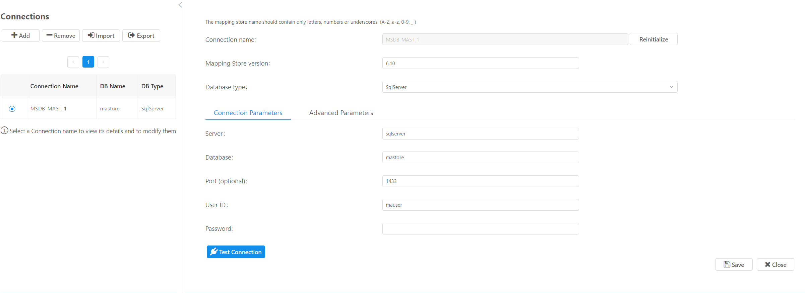

This screen supports adding/editing/deleting mapping stores. On the left side of the screen there is a table with all existing mapping stores. On the right side there are the connection details of the selected mapping store. User can initialize a mapping store or reinitialize it in case mapping store is already initialized. Additionally, he/she can edit the advanced properties of the database connection by pressing Advanced Parameters tab.
A user can use the buttons Add and Remove to add and delete a mapping store. Remove button is enabled when user selects (through the radio button) the mapping store that wants to delete. To edit a mapping store, user can select it from the left sidebar, make the appropriate changes and press save button.

The mapping store connection settings are the following:
| Option | Description |
|---|---|
| database-type | The database type. Options: [Oracle, MySQL, SqlServer]. |
| Server | The Server domain. |
| Database | The Database name. e.g. mastore |
| username | The user name with which connections have to be obtained. |
| password | The password with which connections have to be obtained. |
A user can import a mapping store into another existing mapping store to update the latter by pressing the button Import on the left side of the screen. Export button exports mapping store details in a .zip file.